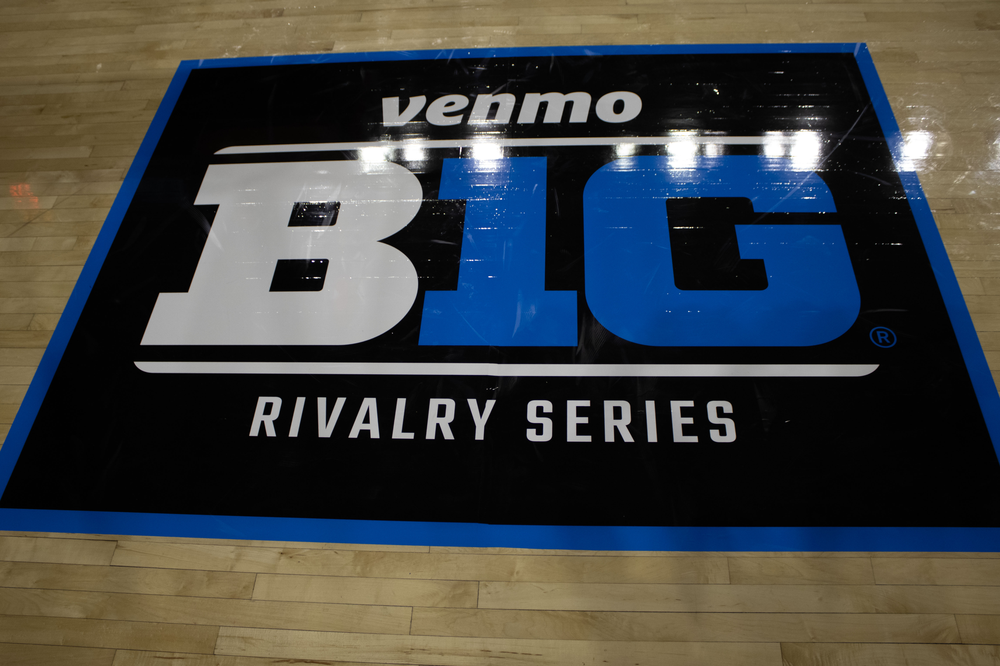
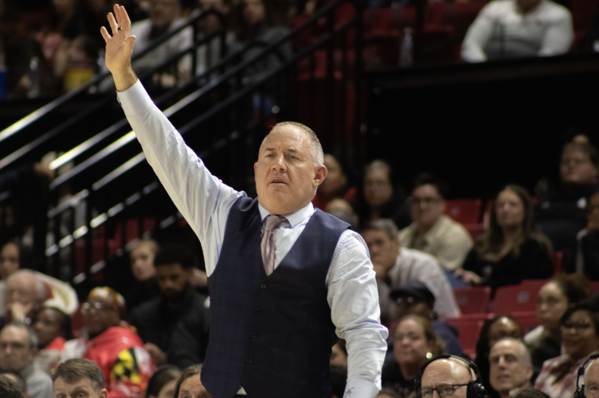

COLLEGE SPORTS • SPORTS GAMBLING • ATHLETE SAFETY
A Target on Their Back
College athletes face a growing wave of abuse as sports gambling expands across the United States.
Effects of Prop Betting on College Atheletics
College athletes are facing a sharp rise in online and in-person abuse as sports betting has spread across the country, according to NCAA officials, who say students are increasingly hit with threats, harassment and demands for money after games.
A handful of states have begun banning legal betting platforms from offering "prop bets" — wagers tied to a specific player's performance, rather than a game's final score — after finding a link between the bets and harassment aimed at student athletes. The NCAA is now pushing for that kind of ban nationwide, a push the gambling industry has lobbied against, warning it could push bettors toward unregulated, illegal markets instead.
It's really been an unfortunate growing phenomenon.
Hangebrauck, who tracks harassment reports for the NCAA, said prop bets tied to individual players — some as young as 18 — leave them especially exposed. He described the abuse rising in near lockstep with each state that has legalized sports betting.
The problem isn't limited to marquee programs. John Parsons of the NCAA's Sport Science Institute said officials are seeing it across every division, not just the sport's elite levels. Sports betting is now legal in 38 states.

Ohio became the first state to ban prop bets tied to individual college athletes, in February. The move followed a 2023 incident in which Dayton Flyers head coach Anthony Grant used a postgame press conference to condemn fans who had flooded his players with abuse online — just over two weeks after Ohio had legalized sports betting.
State regulators later found a pattern: student athletes were receiving payment-app requests from strangers demanding money after a loss or a missed shot, according to Amanda Blackford of the Ohio Casino Control Commission. When Ohio moved to ban the practice, betting companies pushed back — Penn Entertainment, DraftKings, FanDuel, BetMGM and Fanatics all warned that a ban could drive bettors toward illegal, unregulated markets instead, which they argued would pose a bigger risk to athletes.
NCAA officials remain unconvinced. Hangebrauck said he's seen no data to support the industry's warnings. Ohio, Maryland, Vermont and Louisiana have since enacted their own bans on student-specific prop bets, while Massachusetts never allowed them in the first place.
“Individuals who harass athletes, amateur or professional, over a sports bet should not be tolerated.”
Do betting firms agree that harassment has worsened since legalization? Joe Maloney, senior vice-president at the American Gaming Association, said harassment toward athletes should not be tolerated. He argued that legal sports wagering provides more transparency to address these issues.
After Ohio, Maryland, Vermont and Louisiana introduced their own bans on student-based prop bets in college sports.
Unlike these states, Massachusetts did not allow such wagers when it legalized sports betting. “These are kids,” Jordan Maynard, interim chair of the state’s gaming commission, said.
At a conference organized by the National Council on Problem Gambling, Maynard said the impact of gambling on college sports cannot be ignored.
“The people screaming at these kids, this has gotten worse since sports wagering passed ... We can’t put our head in the sand and say it’s not an issue.”
But operators argued that banning legal prop bets could push gamblers toward illegal sportsbooks. Maynard responded that he remained skeptical of that argument.
"I Hope Your Dog Gets Cancer"
“Even if you just go to a game, it’s so prevalent now that you just overlook it,” said Ricardo Hill, basketball coach at Indian Hill High School in Ohio. “You can hear it at every game.”
Hill said several of his former players, now competing in college sports, have described the harassment they receive from fans and bettors.
In a statewide campaign called More Than a Bet, collegiate athletes in Ohio shared some of the messages they received after games.
“You deserve to get unalive for blowing my bet.”

BIG 10 Sticker on Xfinity Center Court in College Park, MD. Source: Deja Jones
Another message sent to a student-athlete read:
“You cost me two grand. I hope your dog gets cancer.”
Officials hope campaigns like More Than a Bet will encourage fans to think twice before sending abusive messages to athletes.
Hill believes sports betting and college athletics should not be connected if it puts student-athletes at risk.
“It’s too dangerous and too risky for the collegiate athletes,” Hill said.
“Sportsbetting is a billion-dollar industry,” he added. “That’s what’s driving the changes. Unfortunately the athletes are on the bottom of the totem in decision making.”
"It's Not Something We Condone"
As concerns over athlete harassment grew, the Responsible Online Gaming Association (ROGA), a group formed by betting companies, announced plans to create education programs focused on responsible gambling.
Several betting operators referred questions about athlete harassment to ROGA after declining to comment directly on the issue.
Jennifer Shatley, executive director of ROGA, said there is not enough information to determine whether harassment has increased since sports betting became legal.
“I don’t know we have enough information to make that judgment.”
Shatley said the issue highlights the importance of responsible gaming programs but added that harassment toward student-athletes is not something the organization supports.
“It’s not something we condone,” she said.
Sports betting companies have invested in responsible gambling campaigns, encouraging users to make informed decisions.
Critics argue those efforts do not address larger concerns about gambling addiction and the responsibility of companies profiting from sports betting.
“Everybody involved in legalized gambling has some responsibility — be it governments, be it operators, be it the players,” Shatley said.
“Everybody has a shared responsibility.”

Maryland Head Coach Buzz Williams. Photo Credit: Deja Jones